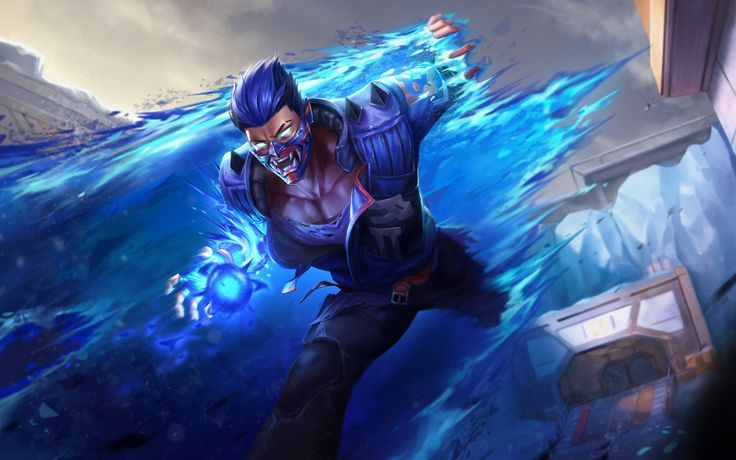
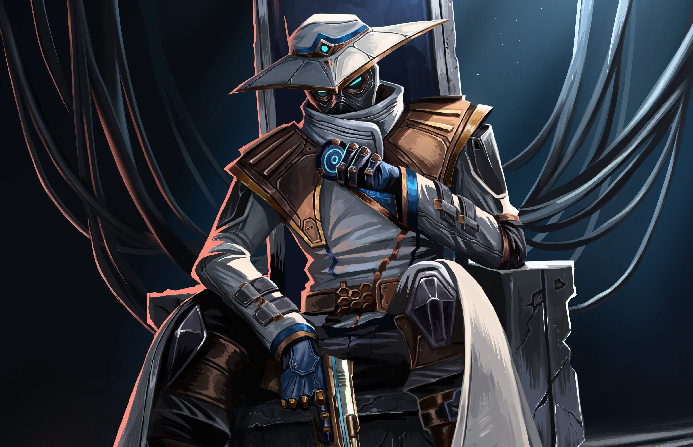

Agents I MAIN yoru/cypher facts

Yoru has a flash called just yoru flash
Yoru has also a abiliti to telleport its called gate crash
Yoru has also a decoy that is him and just walk straight
Yoru has a ult and its called dimensional drift
Yoru is a duelist and a duelist is a guy who push or a girl in the game
CYPHER
cypher has a cage and a trip the trip marks enemy if they touch it and the cage is like a smoke
cypher has a cam and it is like a camera that can see if people are on site or not
And ofc i can not forget about the ult the ult does that you can see people over the whole map two times it shows
I RECOMEND PLAYINF VALORANT YOU RAGE FAST TRUST ME AND ITS REALLY FUNNY TO PLAY WITH PEOPLE
